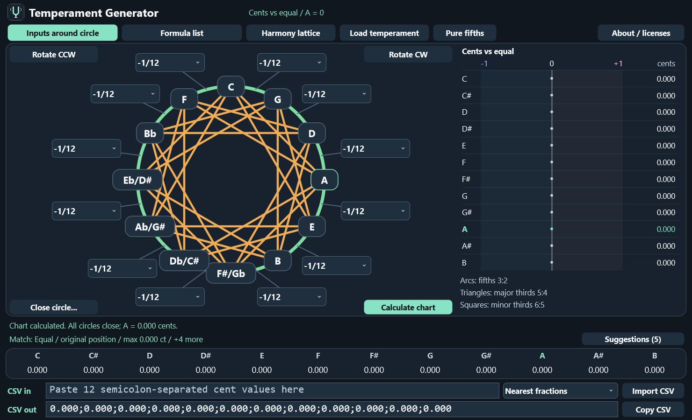

Write the relationships
Use Pythagorean or syntonic comma fractions, expressions such as 1-1/11, and the schisma. Combine the comma units in one field, with compact circle inputs or a wide formula list.
A workbench for musical tuning
Shape a circle of fifths. Balance the commas. Discover what happens to the thirds.
Temperament Generator connects precise tuning calculations with a clear, visual view of your intervals and chords.
This software was created to celebrate the 60th birthday of our beloved friend Jiri Kopecky and is dedicated to him.
Windows x64 · macOS · Linux x64
Fifths around the circle. Thirds across it.
Exact expressionsFractions, commas & schisma
A = 0 centsA consistent tuning reference
CSV both waysExport charts · recover ratios
Inside the application
Three connected views help you understand the tuning you are making. Choose a view below to see the actual application.

Use Pythagorean or syntonic comma fractions, expressions such as 1-1/11, and the schisma. Combine the comma units in one field, with compact circle inputs or a wide formula list.
Mark one or more fields as automatic. The remaining correction is shared equally in cents, with nearby simple fractions shown to help you read the result. Rotate the tuning by fifths in either direction.
Follow fifths, major thirds and minor thirds across the lattice. Clear colours, bold connections and separate sensitivities reveal the tuning of each interval.
A built-in catalogue of around 30 known historical temperaments suggests names, related tunings and their rotations.
Harmony colours describe distance from pure intervals. The sound also depends on timbre, register and musical context.
Get started
Enter your corrections, calculate the chart, then copy a semicolon-separated row from C through B. Import the same format to recover readable comma fractions.
Read the application guide →Free desktop application
Explore and design temperaments on your own computer. No account, subscription or separate JUCE installation is needed to use the application.
Windows x64, macOS and Linux: choose your download on the release page. Mac builds are available for Apple Silicon and Intel.
Download & release notes → Build from source ↗Version 1.5.5 · Windows 10/11, macOS 13+, Ubuntu 24.04. Free and open source under AGPLv3.
The project
Large text, explicit fractions and an uncluttered workspace keep the music at the centre. The desktop application works locally; this website is an introduction and guide.
Maintained by zurek-jiri. You may use, modify and redistribute this application under AGPLv3, including commercially.
Provided without warranty. The full license, library notices and corresponding source accompany the releases.
The C++ calculation code is separate from the JUCE interface. Keeping JUCE allows the same design to be built on all three platforms. Native builds include automated calculation and GUI checks.
Include your application version, operating system, the input values and what you expected to happen. A reproducible CSV row is especially useful.
Contribution guide →GitHub issues ↗